Episode 114: The Neverending Story - Anyone who tried to place a house during that fiasco last week should be able to relate to this 'toon. For those of you who will be viewing this in the year 2003 and still wondering if housing will be implemented soon, today is June 30th, in the year of our Lord 2000, hehe. As this episode opens we find ImaNewbie (along with about 180,000 others) trying to log in last weekend.
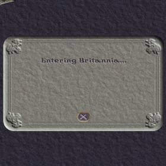

One hour later...
Two hours later...
Finally, Ima manages to log in, only to find
he is frozen solid and cannot move!
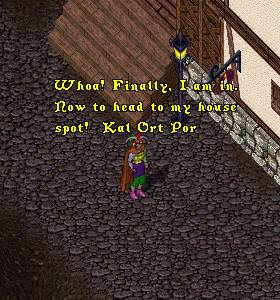
One hour later...
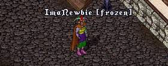
Two hours later...
After what seems to be an eternity, the
'connectivity issues' let up long enough for
Ima to be whisked to his favorite spot where
he plans to place his dream home.
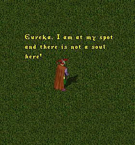
Suprised there is no one there, Ima
decides just to be on the safe side to use
Detect Hidden.
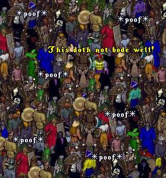
Realizing that it is futile to try and
place in this spot, Ima recalls out
to his second choice.
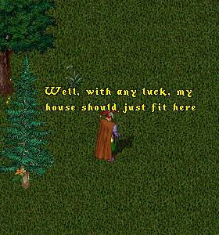
Hold it! What's going on here? Some
sort of strange phenomenon?
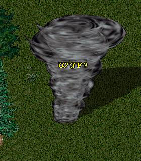
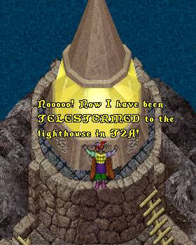
Never one to be easily discouraged,
Ima makes the long trek back from T2A
to the third spot he has chosen.
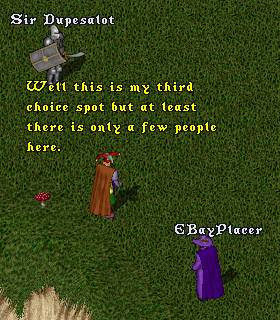
Well, third time lucky, Right? But
just then who should happen along
but a grief player in the form of a
tamer packing two dragons.
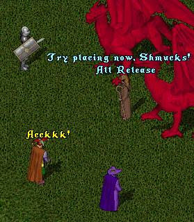
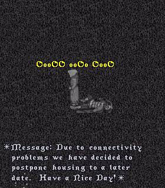
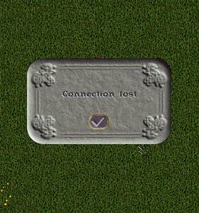